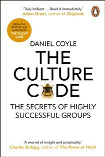

Library › Business & Startups
The Culture Code — Summary & Key Lessons

The secrets of highly successful groups — safety, vulnerability, and purpose, decoded from the world's best teams.
📖 OPEN THE FULL INTERACTIVE BREAKDOWN →🌐 Read it in Hindi, Hinglish, Gujarati, Tamil & 22 more languages — free, with audio.
💡 The Big Idea
Coyle embedded with the world's most cohesive groups — Navy SEALs, Pixar, the San Antonio Spurs, IDEO, a gang of jewel thieves — and found culture isn't personality or mission statements: it's a set of SIGNALS transmitted continuously. Three skills: (1) BUILD SAFETY — belonging cues (eye contact, proximity, turn-taking, small courtesies) tell the ancient brain 'you are safe here, we share a future,' unlocking full cognitive engagement (the kindergartner spaghetti-tower experiment: kids beat MBAs because status games consumed the adults' bandwidth); (2) SHARE VULNERABILITY — trust doesn't precede vulnerability, it FOLLOWS it: the leader who says 'I screwed that up' or 'I need help' first opens the vulnerability loop that makes groups smarter than their members (SEAL after-action reviews, Pixar's Braintrust braving brutal candor); (3) ESTABLISH PURPOSE — high-purpose environments saturate the field with simple, repeated signposts linking present effort to future meaning ('we are here, this is where we're going') — heuristics like the Spurs' 'pound the rock' beat elegant strategy decks. Culture is not what you are. It's what you DO, hourly.
🧠 The 6 Key Lessons
Lesson 1: Safety First: The Spaghetti Tower Lesson
Skill 1: Build Safety
Peter Skillman's challenge — build the tallest tower from spaghetti, tape, string, one marshmallow — is won by KINDERGARTNERS over business students, because the kids skip status management (who leads? do I sound smart? is this criticism?) and just experiment shoulder-to-shoulder. The adult teams' politeness was expensive interference. Group intelligence, Coyle shows, tracks belonging cues more than member IQ: physical proximity, equal turn-taking, abundant eye contact, thanks, small attentions — each cue answers the amygdala's standing question ('am I safe with these people?') and frees the brain for the actual work. Safety isn't soft; it's the hardware requirement for collective thinking — and it's built in tiny moments, not offsites.
📖 Example: Gregg Popovich's Spurs — the NBA's model culture: 'Pop' wraps the hardest coaching truths in unmistakable belonging signals — the famous formula 'I'm giving you these criticisms BECAUSE I have very high expectations and I know you can reach them' (the… Read the full example →
⚡ Do this: For one week, over-signal belonging deliberately: greet by name, put the phone physically away in conversations, thank specifically ('thanks for staying on the migration'), and ensure the quietest person speaks in every meeting. Watch what the group starts saying that it previously didn't.
Lesson 2: The Vulnerability Loop: Weakness Shared Is Trust Built
Skill 2: Share Vulnerability
The instinct says: build trust first, then risk openness. The science says the arrow points the other way — an exchange of vulnerability CREATES trust: person A signals weakness ('I don't know,' 'I need help,' 'I got that wrong'), person B reciprocates, closeness jumps (Aron's 36-questions research industrialized this). In groups, the leader's vulnerability is the master switch: teams cannot be more open than their most powerful member. The institutional forms: after-action reviews where rank dissolves and the question is 'what actually happened?', Pixar's Braintrust (directors submit beloved drafts to unsparing candor — 'all our movies suck at first' is said by the BOSS), red-teaming, and the two magic phrases that upgrade any meeting: 'tell me more' and 'what am I missing?'
📖 Example: The SEAL after-action review, Coyle's centerpiece: minutes after a mission — including the Bin Laden raid rehearsalcycles — teams strip rank and dissect failure with a candor outsiders find brutal ('I lost the door,' 'my call was late'). Nobody's protecting… Read the full example →
⚡ Do this: Lead with the first weakness: in your next team meeting, open with a specific recent mistake of yours and what it taught you — then ask 'what am I missing?' about a current plan, and count to ten before speaking again. Repeat weekly until others start.
Lesson 3: Purpose Is a Signpost, Not a Speech
Skill 3: Establish Purpose
High-purpose groups don't have better mission statements — they have SATURATED ENVIRONMENTS: simple narratives linking now to the future ('we are here → we are going there'), repeated far past the point of leader-embarrassment, embodied in catchphrases that function as decision heuristics (the Spurs' 'pound the rock,' SEALs' 'shoot, move, communicate,' Johnson & Johnson's Credo hierarchy that scripted the Tylenol recall decades later). Two flavors matter: for PROFICIENCY environments (consistency — airlines, restaurants chains), build vivid priorities and repetition; for CREATIVE environments, protect the team's autonomy and treat supporting the creative process itself as the purpose. The test isn't whether purpose is written; it's whether a new hire can state the priority hierarchy after two weeks — because in the crunch moment, people execute the story they've heard most.
📖 Example: Johnson & Johnson's Tylenol crisis (1982): cyanide-tampered capsules, seven dead, no playbook. Managers across the company made the same catastrophic-cost call — total recall, $100M+, transparency first — WITHOUT waiting for orders, because the Credo ('our… Read the full example →
⚡ Do this: Write your group's priority hierarchy as ONE sentence a stressed person can use ('when in doubt, choose X over Y'). Then say it — in standups, docs, reviews — ten times more often than feels natural. Quiz a newcomer in two weeks; their answer is your real culture.
Lesson 4: The Bad Apple Experiment: How Groups Defend Their Chemistry
Skill 1 Applied: Protecting the Circle
Will Felps' famous experiment quantified culture's fragility: plant one actor in small working groups playing one of three toxic types — the Jerk (aggressive, dominant), the Slacker (withholds effort), the Downer (gloomy, defeated) — and group performance drops 30-40% almost regardless of the other members' talent. The poison spreads by mimicry: within minutes, others unconsciously adopt the toxic member's posture and energy (Downers create tables of slumped shoulders). BUT one variable neutralized everything: groups containing a member who responded to each toxic injection with warmth, questions, and redirection — small belonging cues deployed at the exact moment of threat — performed near-normally. Coyle's conclusions for builders: hiring for 'no jerks' outranks hiring for talent (one contaminant taxes everyone's cognition); toxicity must be addressed within DAYS, not performance cycles, because mimicry compounds; and every team needs its 'Nyquist' — the low-status-seeking, high-warmth connector (named for Bell Labs' Harry Nyquist, whom the patent records revealed as the common lunch companion of the labs' most productive inventors): the person whose questions and micro-affirmations quietly re-knit the group after every tear.
📖 Example: Coyle pairs the lab with the legend: Bell Labs auditing WHY certain engineers filed the most patents found one common denominator — regular lunches with Harry Nyquist, an engineer described as radiating warmth and curiosity, who asked question after question… Read the full example →
⚡ Do this: Audit your group for the three types — including whether YOU drift into one under stress. If a contaminant exists, address the behavior this week (privately, specifically, with the belonging preamble: 'you're part of this team, and this pattern is hurting it'). Then find or become the Nyquist: institute one weekly no-agenda lunch/coffee where your only job is questions.
Lesson 5: The Vulnerability Loop: Trust Is Built One Risky Disclosure at a Time
Part 2: The Loop
Coyle's second layer of culture: trust isn't built by team-building exercises — it's built through the 'vulnerability loop', a repeated exchange where someone takes a small interpersonal risk (admits a mistake, asks for help, shares a fear), and someone else responds with acceptance rather than punishment. Each completed loop deposits trust; each punished risk withdraws it. The leader's job is to model the loop — to be the first to say 'I don't know', 'I was wrong', 'I need help' — because status is exactly what makes vulnerability costly, and the leader's cost signals that it's safe. Cultures don't become trusting by decree; they become trusting one loop at a time.
📖 Example: Coyle describes how the best squad leaders in the military open meetings by admitting their own failures — and how that single act transforms what the rest of the room is willing to say. The leader's vulnerability is the permission slip for the team's honesty. Read the full example →
⚡ Do this: This week, be the first to admit a mistake or ask for help in front of your team — deliberately, with a specific example. Complete the loop by accepting someone else's risk-taking without punishment.
Lesson 6: The Belonging Cue: Small Moments That Say 'You're Safe Here'
Part 3: The Cues
Coyle's research on great cultures found they're built on 'belonging cues' — small, almost invisible signals that say 'we're safe, we're connected, we're on the same team': eye contact, physical touch (high-fives), energetic inclusion in conversation, the boss knowing your name and your life. These cues matter because humans are tribal animals who scan constantly for the answer to 'am I safe here?', and the answer is delivered in micro-moments, not mission statements. The practical lesson: culture is not what you write in a values doc; it's the accumulated weight of thousands of small interactions. Leaders who send belonging cues consistently build teams that behave like families — protective, honest, and willing to go beyond the job description.
📖 Example: Coyle shows how a legendary basketball coach's practice — personalized greetings, physical contact, active inclusion — turned a talented but fractured team into a cohesive one: the players started passing to each other more because the belonging cues had… Read the full example →
⚡ Do this: Today, send five deliberate belonging cues: greet people by name, make eye contact, include the quiet person in the conversation, acknowledge one person's effort specifically.
✅ 5-Step Action Plan
- Flood the zone with belonging cues: names, eye contact, equal airtime, specific thanks.
- Open the vulnerability loop from the top: your mistake first, then 'what am I missing?'
- Institutionalize candor: after-action reviews where rank dissolves and process gets autopsied.
- Compress purpose into a usable heuristic and repeat past embarrassment.
- Judge culture by behaviors under stress, not posters on walls.
💬 Best Quotes from The Culture Code
- “Vulnerability doesn't come after trust — it precedes it.”
- “Belonging cues have to be repeated, and repeated, and repeated.”
- “Group culture is one of the most powerful forces on the planet.”
Interactive version: mark lessons as read, listen in your language, share quote cards.